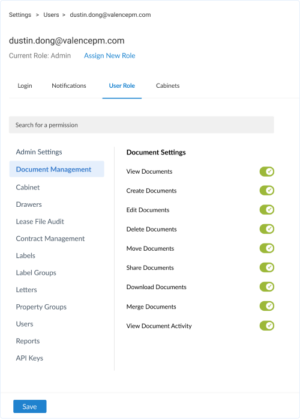
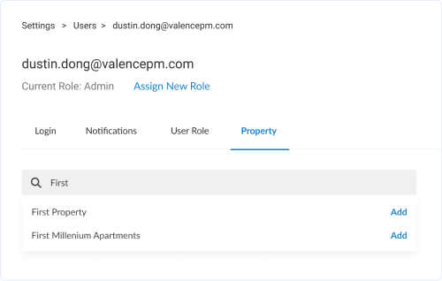

Permissions Redesign
Permissions were too limited in our system
When we launched ValenceDocs, our product was new with limited features. Our permissions started simple, allowing the admin to select a few different roles for their users. As our users and features grew, customers wanted the ability to control every aspect of the system.
Users were only allowed to choose admin or standard role. for each property they were allowed to select read, write, or admin access.
1. Users wanted to restrict or allow access to any part of the system
Based on feedback, having the ability to allow or deny access to every part of the system was the #1 priority
2. Users wanted multi level permissions
They wanted the ability to control anything and everything, down to indvidual files
3. Users wanted the ability to assign a permission to multiple properties
Users were looking for an easy way to assign a permission to multiple properties
User Personas
For this study, there were 3 main user groups that we wanted to focus on
- 1. Office Staff Member
- 2. Property / Regional Manager
- 3. Upper Management / Admins
User Workflow
Our team gathered to gain insight from sales, support, and management to learn and understand more about the pain points. From there we figured out two workflow solutions on how permissions should work.
Unsure on which workflow to go with, I've decided to look at other competitors to see how they incorporated permissions
Learning From Others
I started to dig around to see what other apps I used had permissions. I

What I've Learned From Other Apps
- Competitors used roles as templates. Competitors allowed admins to create roles and assign permissions for the role. After creating the role, admins then assign the role to the user.
- User permission trumps all. Along with roles, you could edit an individual permission. If the invididual permission was edited, then it would override the roles permission.
- Edited roles update the users permission. If the role is edited, it will automatically apply to the users permission, unless the individual user permission was edited.
Testing Each Workflow and Feedback
Based on other apps, we've learned that workflow #2 was a more common practice. We wanted to be 100% sure, so we tested both workflows with current users who would have access to create and edit permissions.
- Workflow #1 would result in too many roles. The feedback we got would be that the first workflow would result in too many roles. Having the folders and file permissions in the role would be too specific for each user.
- Workflow #2 was simple and straightforward. Users understood the workflow, and creating and assign a role was simple and easy to understand.
- We were heading in the right direction. This was the feature users were looking for. They wanted to fully customize a user permission and we were heading in the right direction.
Role Dashboard
In the Role Dashboard, admins can see current roles, create a new role, edit a current role, and learn about roles
Create Role
When creating a role, admins can give it a name, and enable and disable permissions. the features are on the left so users can jump into a specific permission.
Edit Users Permission
Admin can also edit a users permission. A users permission will override the roles permission.
Adding a Property
Admins can search for a property (folder) to give access to.
Assigned Property
Admins can then go to property (folder) to give or deny access to. This overrides all other permissions.